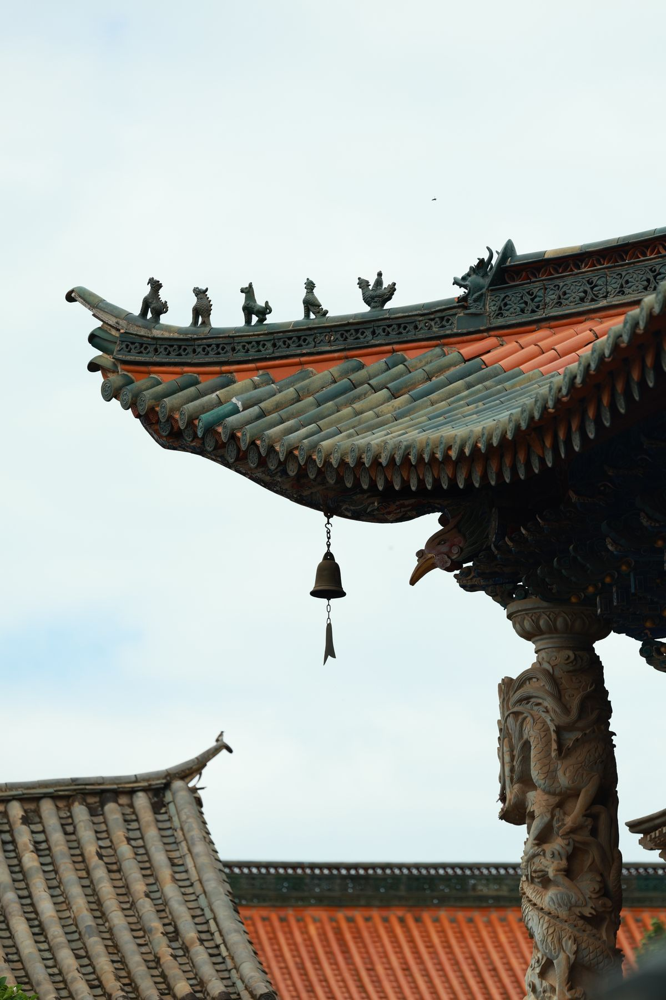
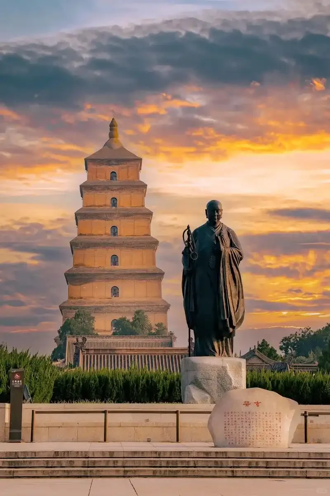
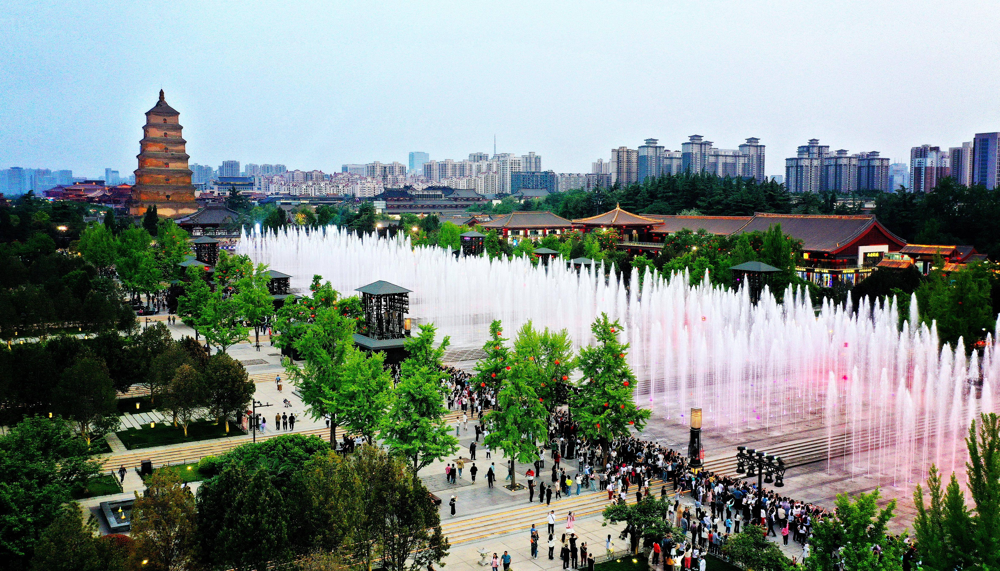
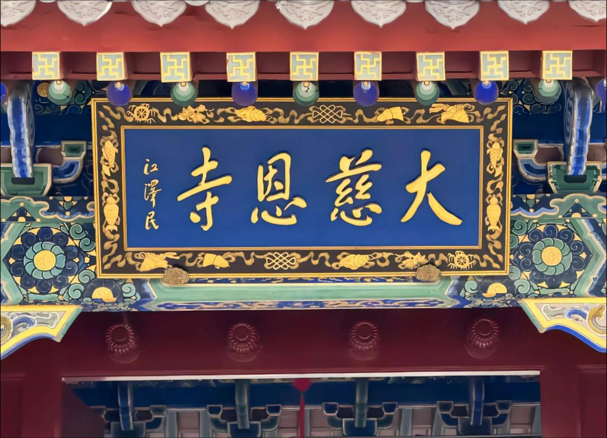
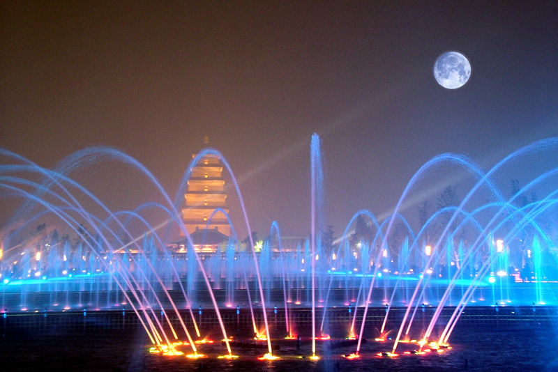
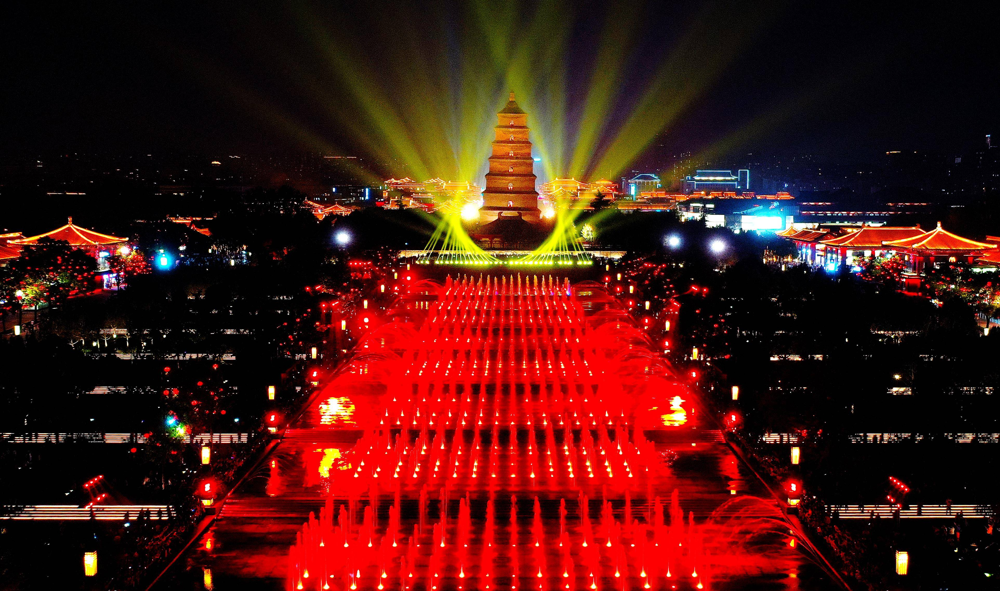

大雁塔的故事，始于一位伟大的僧人——玄奘。唐贞观三年（629年），玄奘法师从长安出发，沿丝绸之路西行，历经千难万险抵达天竺（古印度），在那烂陀寺研习佛法十七年。贞观十九年（645年），玄奘携带657部梵文佛经回到长安，受到唐太宗李世民的隆重迎接。为安置这些珍贵的经卷和佛像，太子李治（即后来的唐高宗）为其生母文德皇后祈福，于贞观二十二年（648年）修建了大慈恩寺，请玄奘担任首任住持。
唐永徽三年（652年），玄奘亲自设计并主持修建了大雁塔，用以保存从印度带回的佛经、佛像和舍利。最初为五层土心砖塔，后经多次改建，最终定型为七层方塔。玄奘在大慈恩寺译经场主持翻译佛经长达十一年，译出佛经75部、1335卷，成为中国古代最伟大的翻译家之一。

关于"雁塔"名称的来历，流传最广的说法源自印度佛教故事：古印度摩揭陀国有一寺院，僧众信奉小乘佛教，可食"三净肉"。一日，一群大雁从寺顶飞过，一僧仰面叹道："今日僧众无肉可食，菩萨应知。"话音刚落，一只大雁从空中坠落，死在僧前。众僧认为是菩萨舍身布施，于是在雁落之处建塔安葬，名为"雁塔"。玄奘取此典故为塔命名，既表达了对佛教发源地的追慕，也赋予大雁塔慈悲与奉献的精神内涵。
大雁塔为砖仿木结构方锥形楼阁式塔，底层边长25米，通高64米。塔身各层以砖砌出仿木构的枋、斗拱和栏额，每层四面各辟一券门，可登临远眺。塔内设有木梯盘旋而上，登至顶层可俯瞰整个西安城，南望终南山，北瞰大明宫遗址，气象万千。
大雁塔最著名的文化传统是"雁塔题名"：唐代新科进士在曲江赐宴后，会登大雁塔，将姓名题写在塔壁上，称为"雁塔题名"或"慈恩题名"。白居易27岁中进士时曾题诗："慈恩塔下题名处，十七人中最少年。"这一传统延续至明清，使大雁塔成为科举文化的象征，也是中国古代士人"金榜题名"梦想的见证。
"慈恩塔下题名处，十七人中最少年。" —— 白居易
2003年建成的大雁塔北广场是亚洲最大的喷泉广场之一，每晚定时上演大型音乐喷泉表演。广场两侧的唐代文化柱、诗人雕塑群和"大唐盛世"浮雕墙，将盛唐气象与现代景观艺术完美融合。广场与身后古朴的大雁塔形成跨越千年的对话，是古老长安与现代西安交汇的缩影。




| 地址 | 西安市雁塔区慈恩路（大慈恩寺内） |
|---|---|
| 开放时间 | 大慈恩寺 08:00—17:30；北广场全天开放 |
| 门票 | 大慈恩寺 50 元 / 登塔另收 30 元 |
| 交通 | 地铁 3 号线 / 4 号线大雁塔站 |
| 小贴士 | 推荐傍晚时分前往，先参观大慈恩寺和登塔，入夜后观赏北广场音乐喷泉（平日 20:30 开始）；周边大唐不夜城可一同游览 |